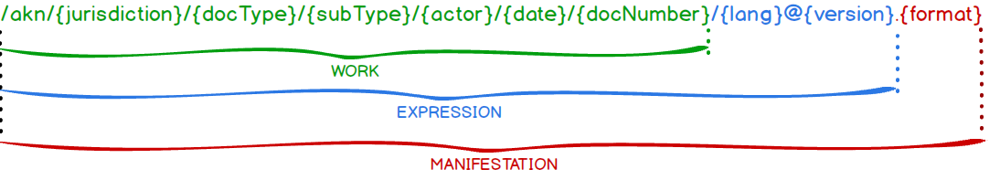

AKN4UN Naming convention
NOTE: IRIs as both Identifiers & References
An important point to note here is that of the dual use of IRIs in Akoma Ntoso documents. In one context, they have an identifier definition aspect, and are used to define identifiers, and in the other context, IRIs are references that resolve to other documents.
So how do we differentiate between each context? A simple way to make out the difference is to see where the IRI appears.
If you see the IRI appear within the <meta> block, say within <FRBRWork> or <componentData>, then their function is purely in a definition aspect – here they define the IRI for the document or the associated component.
If you see the IRI appear within the body of the document using one of the reference elements, then its function is purely in terms of a way to reference another document.
IRI Identifiers for Documents
As we have seen in the “Akoma Ntoso Naming Convention” section, the document and its components are classified in Akoma Ntoso using a conceptual structure based on the 3 FRBR levels that may be easily identified in any AKN IRI.

Figure: FRBR Levels in an AKN IRI
The parts of an AKN document IRI may be seen in the Figure above, items in {} are placeholders for metadata, the various parts and placeholders of the IRI (in black) have been explained further below.
The Work IRI does not include the language or version because it represents the abstract “concept” of the legal resource; the Expression IRI does not include the format because it deals only with the “form” that a Work may assume in a language and version; the Manifestation IRI includes all the constituents and adds the “format”, electronic or physical, of the Expression. As we move from the Work IRI to the Manifestation IRI, the level of detail becomes more specific.
Each constituent part of the IRI generally corresponds to metadata found in the <identification> part of the document.
Work IRI
The IRI for the Work consists of the following pieces, separated by forward slashes “/”. The IRI is case sensitive (note: items required in red):
/akn/{jurisdiction}/{docType}/{subType}/{actor}/{date}/{docNumber}
e.g. -- /akn/un/collection/publication/un-ga/2012-01-13/A-RES-66-1
United Nations General Assembly publication A/RES/66/1 of 13th January 2012
See below the Work IRI constituents, for how the IRI constituents correspond.
Figure: Work IRI constituents
Each part of the Work IRI generally corresponds to a value found within the AKN <identification> metadata of the document.
Table: Parts of a WORK IRI
component | allowed values | note |
AKN prefix (required) | akn | The /akn prefix to identify the IRI as belonging to the Akoma Ntoso Naming Convention |
{jurisdiction} (required) | un | Reserved directly by ISO 3166/MA for the United Nations (in lower case) |
{docType} (required) | act | bill | debate | doc | etc. | Akoma Ntoso document types. This value MUST correspond to the name of the element immediately within the akomaNtoso root element (e.g. act, bill, or debateReport.) |
{ subtype} (required) | | treaty | resolution | … | This value MUST correspond to the content of the @value attribute of the element <FRBRsubtype> in the <FRBRWork> section. |
The {actor} corresponds to {organizations-body-sub-body} separated by a dash | fao | un | imo | fao-council | un-ga | un-ga-gc (General Committee) | This value MUST correspond to the end point of the <TLCConcept> IRI referenced by the @href attribute of the element <FRBRauthor> in the <FRBRWork> section of the metadata. |
{date} (required) | YYYY-MM-DD | Original creation date (expressed in YYYY-MM-DD format). This value MUST correspond to the @date attribute value of the element <FRBRdate> in the <FRBRWork> section of the metadata. If the original creation date is only partially available (e.g. just the year), set the day and month as 1st of January Note: the AKN naming convention permits just YYYY in IRIs in cases where the full date is not available, however we do not recommend this in AKN4UN, instead we recommend using the full date as it appears in <FRBRdate>. |
{docNumber} (required) | The value MUST correspond to the value of the @number attribute in the element <FRBRnumber>. If the document does not have a number, AKN allows setting a unique string of characters as the number (which should correspond to what is set in <FRBRnumber>. See also “Documents without Numbers | |
{component} (optional) | Component and fragment specifications. |
Numbers and Invalid characters in IRI
Occasionally, document identifiers in UN documents have characters which are invalid to be used in an IRI.
For example:
CL 154/1 is the document number of a FAO council Agenda
70/34 is the document number of a GA Resolution
Each of these identifiers have characters which do not fit well within the AKN IRI structure, namely the “/” character and the literal space “ “. While “/” is a valid IRI character, each “/” segment of the AKN IRI has specific meaning, the use of “/” in the number segment would make it difficult to parse IRIs in a uniform way. Similarly with the literal space, it needs explicit encoding. For this reason, we replace certain characters in numbers in the IRI with substitute characters:
“/” is substituted with a dash (“-“)
“ “ space is substituted with an underscore (“_”)
To prevent confusion in cases where a number has an explicit dash or an explicit underscore, the actual rendering of the number as used by the organization needs to be set in the @showAs attribute of <FRBRNumber> and via <docNumber> mark-up.
Documents without Numbers
If a document does not have a number, because it never has a number, then a unique number in a format as decided by the implementor should be set for the document when it is created and used in the <FRBRnumber>.
NOTE: The FRBRthis URL is usually the appropriate Work/Expression/Manifestation part PLUS the component part.
The component part implies that a document is composed of multiple files, presumably grouped into a folder (or within an archive file). However, this isn't always the case. If a document does relate to a single file, the component is still referred to as '!main'.
The FRBRuri URL is usually just the appropriate Work/Expression/Manifestation part.
Both the language and the version qualifiers are optional for an Expression, although usually at least one will be present. The @ sign will always be present when referring to an expression.
An Item is usually specified using a full URL including the domain where the document may be found.
The other case is for a work-in-progress document, where the number is only assigned after a particular stage. In such cases, assign a unique number in a format as decided by the implementor, and use that in <FRBRnumber>. You may set a status in the <proprietary> block to indicate the temporary nature of the number. Subsequently, when the final number is provided, update the <FRBRnumber> to indicate the correct number and set the IRI based on the older number into the @value attribute of the <FRBRalias> element. In this way, existing references to the document which used the previous temporary number will not break.
Expression IRI
The IRI for the Expression is an extension of the IRI of the Work, and consists of the following pieces:
[work IRI]/{lang}@{date}
[work IRI = /akn/un/collection/publication/un-ga/2012-01-13/A-RES-66-1]
[expression part IRI = /eng@2013-12-12]
The IRI expression of the whole document is as follows:
/akn/un/collection/publication/un-ga/2012-01-13/A-RES-66-1/eng@2013-12-12
United Nations General Assembly publication A/RES/66/1 of 13th January 2012, version as of 12 December 2013.
Table: Parts of an EXPRESSION IRI
component | allowed values | note |
The character “/” | / | |
{lang} | e.g. | Arabic: ara Chinese: zho French: fra German: deu Russian: rus Spanish: spa | Language code of the Expression (a three-letter code according to ISO 639-2 alpha-335 values for that language). This value MUST correspond to the value of the @language attribute of the element <FRBRlanguage> in the <FRBRExpression> section of the metadata. |
The “@” character | @ | This is a separator. |
version date | ISO 8601 date (YYYY-MM-DD) | For a formally approved/published document36, the version date of the Expression in YYYY-MM-DD syntax. This value MUST correspond to the value of the @date attribute of the element <FRBRdate> in the <FRBRExpression> section of the metadata. If there is no date for the version, then the version number if one exists, or any other disambiguating string as decided upon by the implementor that helps identifying the specific version of the document, in this case the value MUST correspond to the content of element <FRBRversionNumber>. The semicolon separator is applicable in the version typically for retroactive modifications to a document. For example, if the standard of this example was retroactively modified in 2016, then the version part would have 2 dates instead of 1 separated by a semicolon: [IRI expression = /eng@2013-12-12;2016-01-01] |
Manifestation IRI
The IRI for the Manifestation is an extension of the IRI of the Expression, and consists of the following pieces:
[expression IRI]/.{format}
[expression IRI = /akn/un/collection/publication/un-ga/2012-01-13/A-RES-66-1/eng@2013-12-12]
[manifestation part IRI= /.xml]
The IRI of the Manifestation of the whole document is as follows:
/akn/un/collection/publication/un-ga/2012-01-13/A-RES-66-1/eng@2013-12-12/.xml
United Nations General Assembly publication A/RES/66/1 of 13th January 2012, version as of 12 December 2013 in XML format.
The IRI of the Manifestation is the corresponding Expression plus:
component | allowed values | note |
Character dot (required) | “.” | This is a separator. |
Data format (required) | unique three or four letter extension signifying the data format of the Manifestation | This value MUST correspond to the content of the @value attribute of the element <FRBRformat> in the <FRBRManifestation> section of the metadata. |
Note: before the character dot in the manifestation IRI, AKN allows adding manifestation author information as part of the Manifestation IRI. This is optional, and it is shown below.
component | allowed values | note |
mark-up author (optional) | Open/free name of the organization/person responsible for the mark-up e.g. DGACM | This value MUST correspond to the content of element <FRBRauthor> in the <FRBRManifestation> section of the metadata. |
Separator | / | |
Mark-up date (optional) | ISO 8601 date | This value MUST correspond to the content of element <FRBRdate> in the <FRBRManifestation> section of the metadata. |
Mark-up Info (optional) | Any additional mark-up-related annotation (e.g. the existence of multiple versions or of annotations.) |
Structural Components IRI
Components are a way to organize content. All documents at all levels may be composed of sub-elements, that when combined form the whole document (i.e. a main body possibly followed by a number of attachments such as schedules and tables). Components themselves have structural elements just like any AKN document -- <block>, <container>, <article>, <part>, etc. They follow the same structural model like any AKN document.
As structural components reside within an AKN document, their IRI references are merely extensions of the AKN document’s Work-level and Expression-level references. References to components and parts of a document are specified at the end of the IRI for Work-level and Expression-level references, and just before the data format for Manifestation-level references. They are introduced by a special character to separate the parts of the IRI reference identifying the document as a whole from the parts identifying the component and/or part.
The tables below provide a detailed description of Component level Work, Expression and Manifestation IRIs.
Table: Parts of a Component Work IRI
component | allowed values | note |
IRI of the corresponding Work that the component is a part of (required) | IRI value of the Work | Assuming the Work is the General Assembly Resolution no. 71/4 from 13 October 2016. Then its Work IRI will be as follows: /akn/un/statement/resolution/un-ga/2016-10-13/71-4 |
The character “/” | “/” | This is a separator |
The character “!” followed by the name of the component or attachment | “!{name}” | The {name} may be: -The name “main” if the component is the only component or is the main component in a hierarchy -A unique name for the attachment, optionally followed by the number associated to this component in the document. If this number is provided, it is separated from the name with “_”. For instance, reference to the main document of the General Assembly resolution no. 71/4 of 13 October 2016: /akn/un/statement/resolution/un-ga/2016-10-13/71-4/!main Reference to the Annex 1 document of the General Assembly resolution no. 71/4 of 13 October 2016: /akn/un/statement/resolution/un-ga/2016-10-13/71-4/!annex_1 |
Table: Parts of a Component Expression IRI
component | allowed values | note |
IRI of the corresponding Expression (required) | IRI value of the Expression | Assuming the Expression is the Original English Language General Assembly Resolution no. 71/4 from 13 October 2016. Then its Expression IRI will be as follows: /akn/un/statement/resolution/un-ga/2016-10-13/71-4/eng@ |
The character “/” | “/” | This is a separator. |
The character “!” followed by the name of the component or attachment | “!{name}” | The {name} may be: -The name “main” if the component is the only component or is the main component in a hierarchy -A unique name for the attachment, optionally followed by the number associated to this component in the document. If this number is provided, it is separated from the name with “_”. For instance: Reference to the main document of the Original English General Assembly resolution no. 71/4 of 13 October 2016: /akn/un/statement/resolution/un-ga/2016-10-13/71-4/eng@!main Reference to the Annex 1 document of the Original English General Assembly resolution no. 71/4 of 13 October 2016: /akn/un/statement/resolution/un-ga/2016-10-13/71-4/eng@!annex_1 |
Table: Parts of a Component Manifestation IRI
component | allowed values | note |
IRI of the corresponding Manifestation without the “.” and the specification of the format (required) | IRI value of the Manifestation | Assuming the Manifestation is the Original English Language General Assembly Resolution no. 71/4 from 13 October 2016 in XML format. Then its Manifestation IRI will be as follows: /akn/un/statement/resolution/un-ga/2016-10-13/71-4/eng@.xml But for Component manifestation IRIs we drop the “.xml” part: /akn/un/statement/resolution/un-ga/2016-10-13/71-4/eng@ |
The character “/” (required) | “/” | This is a separator |
The character “!” followed by the name of the component or attachment (required) | “!{name}” | The {name} may be: -The name “main” if the component is the only component or the main component in a hierarchy -A unique name for the attachment, optionally followed by the number associated to this component in the document. If this number is provided, it is separated from the name with “_”. For instance: Reference to the main document of the Original English General Assembly resolution no. 71/4 of 13 October 2016: /akn/un/statement/resolution/un-ga/2016-10-13/71-4/eng@!main Reference to the Annex 1 document of the Original English General Assembly resolution no. 71/4 of 13 October 2016: /akn/un/statement/resolution/un-ga/2016-10-13/71-4/eng@!annex_1 |
The character “.” (required) | This is a separator | |
A unique three or four letter extension signifying the data format in which the Manifestation is drafted (required) | “{extension}” | The extension may be “pdf” for PDF, “doc” or “docx” for MS Word, “html” for HTML “xml” for an XML Manifestation, or “akn” for the package of all documents including XML versions of the main document(s) according to the Akoma Ntoso vocabulary. For an Akoma Ntoso XML representation, this value MUST correspond to the content of element <FRBRformat> in the <FRBRManifestation> section of the metadata. For example, reference to the Annex 1 document of the Original English General Assembly resolution no. 71/4 of 13 October 2016 in XML format: /akn/un/statement/resolution/un-ga/2016-10-13/71-4/eng@!annex_1.xml In pdf format: /akn/un/statement/resolution/un-ga/2016-10-13/71-4/eng@!annex_1.pdf |
Component Hierarchies
As we have mentioned earlier, components are structurally like the documents that they are part of. This makes it possible for components to have components themselves and so on.
Let’s say hypothetically, the General Assembly resolution no. 71/4 of 13 October 2016 (which we have seen earlier) has a component, report 1.
The document’s Work IRI to the main component is:
/akn/un/statement/resolution/un-ga/2016-10-13/71-4/!main
The Work IRI of the report 1 component will be:
/akn/un/statement/resolution/un-ga/2016-10-13/71-4/!main/report_1
Note that the above is a reference to the whole document of Report 1, if we wanted to refer to the main document of
Report 1, the IRI would look like this:
/akn/un/statement/resolution/un-ga/2016-10-13/71-4/!main/report_1/main
If Report 1 had a component “Schedule A”, then we would refer to Schedule A as follows:
/akn/un/statement/resolution/un-ga/2016-10-13/71-4/!main/report_1/main/schedule_A
Note that the above is again a reference to the whole document of Schedule A, if we wanted to refer to the main document of Schedule A, the IRI would look like this:
/akn/un/statement/resolution/un-ga/2016-10-13/71-4/!main/report_1/main/schedule_A/main
As you may see there is a hierarchy of nested components in the IRI, which corresponds to the nested way the components are structured.
Non-Document IRI
All the Top-Level Class elements share the same structure. They are empty elements in the references section with the four attributes defined below:
href | The IRI describing the entity being referred to. |
id | XML identifier of the element that may be used within the instance to reference the entry. All internal references will thus use this id. For instance, every event in the document lifecycle has a source attribute containing a reference to the id of the document affecting or being affected by the document. There are several different possible identifier attributes (id, GUID, wId, eId), see below. |
showAs | This is the string that may be used to display information about this entity. For instance, this attribute contains the name of the speaker. |
shortForm | Optional attribute containing a secondary form of the display information of the entity. |
The "showAs" and "shortForm" attributes cannot be used to generate the content.
The identification of semantics inside the text is done as a two-step process:
The content or metadata elements has to be associated with a concept in the <references> section of the metadata.
An entry for the ontological concept is added to the references section and as unique id used the value of the related @refersTo attribute. According to the context, attributes @as and @by may be used as well.
For instance, every individual in a debate is associated to an element TLCPerson in the references section. The @by attribute of the speech element indicates the speaker (this must be a TLCperson), the @as attribute specifies the role of the speaker (TLCrole) and the @to attribute indicates the addressee (this may either be a person or a role).
Element Identifiers
Identifiers allow identifying parts / sections within documents, and also, if required, fragments of text. Element Identifiers are essentially a way to uniquely name and identify parts of a document within the context of the document.
The Akoma Ntoso Naming Convention identifies elements, in a unique way, using:
eId attribute (“Expression-level” identifier). This is the first and most important identifier. An eId attribute provides uniqueness of an element within a specific Expression. The value of eId is specified as connected to the structural role of the corresponding element. So whenever the structural role of the element changes e.g. because new sections, articles, are added to the document, it needs to be updated in a new Expression (i.e. if the element is renumbered or changed in nature, e.g. from section to an article).
wId attribute (“Work-level” identifier). This attribute is only needed if the eId is not also a Work-level identifier, e.g. because of renumbering. It is meant for mapping the identity and position of the same elements in different Expressions and variants of the same Work. The wId identifier will be explicitly included when the eId changes from one Expression to another. The value of the wId attribute never changes; it must be the same values for the same elements in all the Expressions of a document. In order to allow this, a master Expression needs to be identified, i.e. the Expression whose eId attribute becomes the reference for the wId attribute of all other Expressions.
GUID attribute (Globally Unique Identifiers). This attribute is an application-specific identifier that a local implementation may need to add to elements according to local rules and syntaxes. GUID is not a required attribute. Its use and specification is totally dependent on the representation and storage requirements of the author of the Manifestation. Despite the name, GUIDs do not even have to be globally unique across documents of the same collection. They are meant as a way to place ids from legacy formats and collections and that are still in use. The usage of GUID attribute has no required syntax and does not impact on compliance with this specification.
Typically, you will use two of the three Akoma Ntoso identifier attributes. More commonly in publishing scenarios you will likely use only @eId.
There are a few considerations which must be taken into account when choosing what combination of identifiers to use:
Can the identifiers be reliably produced? This is a special consideration when it comes to conversion. If your process relies on re-conversion of documents repeatedly, will each conversion yield the same identifiers? Since AKN @eId identifiers correspond to the structure of the document, this is particularly relevant.
Can the identifiers be reliably managed? Special consideration must be given to how provisions are moved and copied. For instance, if a provision is moved from one location to another, its immutable identifier should be retained. However, if a provision is copied, then a new immutable identifier should be assigned ― otherwise there will be multiple provisions with the same identity. A case which requires particular consideration is cut & paste. These are scenarios where you will need to use both @eId and @wId identifiers to keep track of the movement of the identified section, and an application mention that handles situations like copy and paste.
Can the identifiers be guaranteed unique? This consideration often comes down to the legislative practices and what is allowed or not. Another consideration is that completely unrelated provisions may share a number ― but over different periods of time. Quite often, ambiguities such as these are resolved in textual citations using qualifying language such as 'as introduced by ...' or 'as amended by ...', such a situation may require the use of all three identifiers - @eId, @wId, @GUID.
Forming identifiers
Akoma Ntoso provides considerable guidance for how to form an @eId or @wId identifier. First, there is the overall structure of the identifier. Second, there is a set of required abbreviations to use for various provision types.
Format of an Identifier
The objective of an Akoma Ntoso identifier is to form a human-readable identifier that may easily be parsed and is, to a reasonable degree, guaranteed to be unique.
The @eId and @wId are expressed using a hierarchical notation based on the hierarchical level type and the alphanumeric designation assigned to it. The format is:
{levelType}_{levelNum}[__{sublevel}]
Where:
{levelType} ― The level type is the name of the level, expressed in full in five or fewer characters or by using abbreviations shown below. The level type is always expressed in lowercase. If a level does not have specific type designated, you may omit the {levelType}_ part.
{levelNum} ― The level number follows an underscore and is the exact numeric designation assigned to the level. The level number is expressed as a case-sensitive string with all modifiers and separators stated as is.
[__{sublevel}] ― The sublevels are one or more hierarchical sublevels required to uniquely identify the provision. Each sublevel uses the same name pattern as the initial level ― namely {levelType}_{levelNum}. Sublevels are preceded by double underscores.
With some levels, such as sections or articles, the numeric designation runs on throughout the document without resetting at each hierarchical boundary, and it is not customary to refer to the provision in a hierarchical manner. In this case, the identifier should only include the provision’s own level type and level number.
Abbreviations
Akoma Ntoso provides the following set of preferred abbreviations to use as the level type prefix in identifiers:
XML element | Abbreviation |
<alinea> | al |
<amendmentBody> | body |
<article> | art |
<attachment> | att |
<blockList> | list |
<chapter> | chp |
<citation> | cit |
<citations> | cits |
<clause> | cl |
<component> | cmp |
<componentRef> | cref |
<components> | cmpnts |
<debateBody> | body |
<debateSection> | dbsect |
<division> | dvs |
<documentRef> | dref |
<eventRef> | eref |
<intro> | intro |
<judgmentBody> | body |
<list> | list |
<listIntroduction> | intro |
<listWrapUp> | wrap |
<mainBody> | body |
<paragraph> | para |
<quotedStructure> | qstr |
<quotedText> | qtext |
<recital> | rec |
<recitals> | recs |
<section> | sec |
<subchapter> | subchp |
<subclause> | subcl |
<subdivision> | subdvs |
<subparagraph> | subpara |
<subsection> | subsec |
<temporalGroup> | tmpg |
<wrapUp> | wrapup |
Some elements in AKN share abbreviations:
XML Elements | Abbreviation |
<list> and <blockList> | list |
<intro> and <listIntroduction> | intro |
<wrapUp> and <listWrapUp> | wrapup |
<body>, <mainBody>, <amendmentBody>, <debateBody>, <judgmentBody> | body |
For words greater than five characters in length that aren’t on this list, choose a reasonable abbreviation as necessary, otherwise use the name as is (e.g. <title> is prefixed ‘title’). For instance, you might want to abbreviate ‘schedule’ as ‘sched’.
For generic elements like <hcontainer> it is possible to use the name as the level type prefix, for instance in the below example, we have a generic hcontainer called “goal” – in such cases the name as the id abbreviation prefix, “goal” should be used:
<hcontainer name="goal" eId="goal_4">
<paragraph eId="goal_4__para_1">
<content>
....
</content>
</paragraph>
</hcontainer>
Numbers
The number part of an identifier is a (possibly empty) representation of the numbering of the element within its context. There are various rules that need to be kept in mind for the number part of the identifier.
Explicit & Implicit Numbers
For example, when we say:
<paragraph eId="para_1">
<content>
....
</content>
</paragraph>
It implies that this is the first paragraph, in the context of the hierarchy, there is no explicit number, so we just use the implied number based on the sequence.
However, paragraphs are typically explicitly numbered:
<paragraph eId="para_21">
<num>21.</num>
<content>
....
</content>
</paragraph>
Or
<paragraph eId="para_A">
<num>A.</num>
<content>
....
</content>
</paragraph>
In such cases, since the paragraph has been explicitly numbered, the value in the <num> is used to set the number part of the @eId. The number part of the identifiers is obtained by stripping of all final punctuation, meaningless separations, as well as redundant characters in the content of the <num> element (what is meaningless has to be determined by the authors). The representation is case-sensitive. For example, Article 11.2 Rev.A would have its number part set as “11-2RevA”:
<paragraph eId="para_11-2RevA">
<num>11.2 Rev. A</num>
<content>
....
</content>
</paragraph>
Unique Elements
Some elements are unique within their context. For example, a normative document has only one <body>, so it is enough to identify the <body> as “body”. Similarly, there is only one <content> block allowed in a paragraph, and for this reason we may identify the <content> block without a number suffix, e.g. “para_1__content” for the content part of paragraph 1.
Use of @eId, @wId and @GUID
@eId and @wId may be used together, though in most cases you would use only one of them (@eId). For the vast majority of documents that are not subject to modifications over time, where parts of operative text that will only have a single location and numeric designation, there is no need to have more than a single identifier at all. The @eId value will suffice as both the overall identifier (the immutable identifier) and the version identifier.
However, if the @eId changes at some point, the @wId identifier comes into play, being introduced when necessary to hold the original @eId value once the @eId takes on a new value.
For example, with this scheme, if Paragraph 8 has the identifier para_8 in @eId, it is referred to via the “para_8” value (/akn/un/statement/resolution/un-ga/2016-10-13/71-4/!main#para_8). Now, if a new paragraph is added to the document before Paragraph 8 and Paragraph 8 becomes the ninth paragraph, then Paragraph 8 will get the new identifier “para_9” which will be set in the @eId attribute for the paragraph and the @wId attribute will have the previous value “para_8”. From that moment on the paragraph will be referred to via the new @eId value (/akn/un/statement/resolution/un-ga/2016-10-13/71-4/!main#para_9).
Despite moving to a new position, the information that was at a previous position is still retained in the paragraph. Essentially in terms of use cases, @eId is used for navigating the document and references, and the @wId is used for tracking the element using an unchanging id – whether it is for amendment functionality or for some complex translation functionality.
Another way to address this problem is using @eId and @GUID. For instance, in this use case, the @eId is the version identifier and describes the part of the operative text as it is located and numbered for this specific version. The @GUID, unlike the @wId, is assigned when the part is first created and is maintained, unchanged, throughout the life of the part in question. In this scheme, the @eId always gives the most current address of the part, and the @GUID gives a permanent address to a part no matter where it moves.
The three identifiers together provide a lot of use cases scenarios for different representations of documents and their legacy uses. The intention is to provide a level of flexibility to accommodate traditions of different UN system organizations.
NOTE: When to set @eId and when to not set it.
The AKN schema makes @eId compulsory for some elements. However, there may be cases where an @eId is not mandatory according to the schema but it may be necessary to include it from a functional and semantic point of view. For example, if in a section of a normative document certain paragraphs are being modified, or need to be identified explicitly to be able to link to them from an external IRI reference, then it is necessary to set the @eId identifier. In the example below, the text paragraphs in the content are not identified, and it is not necessary to do so:
<paragraph eId="para_11-2RevA">
<num>11.2 Rev. A</num>
<content>
<p>Paragraph 1</p>
<p>Paragraph 2</p>
<p>Paragraph 3</p>
</content>
</paragraph>
But we may explicitly identify the paragraphs:
<paragraph eId="para_11-2RevA">
<num>11.2 Rev. A</num>
<content>
<p eId="para_11-2RevA__p_1">Paragraph 1</p>
<p eId="para_11-2RevA__p_2">Paragraph 2</p>
<p eId="para_11-2RevA__p_3">Paragraph 3</p>
</content>
</paragraph>
Now that we have identified the paragraphs, we may explicitly refer to them either as fragment or portion references:
As a fragment, with #: /akn/un/act/…./!main#para_11-2RevA__p_1
As a portion, with ~: /akn/un/act/…./!main~para_11-2RevA__p_1
Using IRI References
So far we have seen how documents and parts of documents are identified using the IRI naming convention. The purpose of identifying a document and its parts is to be able to consistently refer to the document or its parts.
Now let’s look at the other use of IRIs, which is as references. Akoma Ntoso supports different kinds of references to handle all the cases of how documents refer to each other. References also carry different purposes depending on the context. IRI references are typically found in the body / content of the document, and only in certain cases appear in the <meta> section.
References to documents
Simple References
The most common way to use References is to use it to link to / refer to other documents. In such cases, typically an inline content reference tag is used:

Figure: Reference to another document
In Figure 7, we see an example of a reference to another document. It is a reference to Resolution 46/182 of 19 December 1991. In the above example, the resolution (64/294) is published as a PDF37. You may mark it up as a reference and use the IRI to directly link Resolution 64/294 to Resolution 46/182:
<ref href="/akn/un/statement/resolution/un-ga/1991-12-19/46-182/">
Resolution 46/182 of 19 December 1991
</ref>
At run-time when converting the XML to a presentation format, the system would convert the IRI to a link by prefixing it with the appropriate base-authority resolver URL (e.g. https://resolver.akn4un.org/akn/un/statement/resolution/un-ga/1991-12-19/46-182/ ).
Point-in-Time References
The previous example was a reference to a work, typically General Assembly resolutions do not get amended. However resolutions may amend other documents. For example, we have the FAO Resolution 8/201538 which amends the FAO Basic Texts.
 Figure: FAO Resolution amending Basic Texts
Figure: FAO Resolution amending Basic Texts
 Figure: FAO amended Basic Texts
Figure: FAO amended Basic Texts
As a result of this resolution, amendments to the Basic Texts, a normative document (Rule XII sub-paragraph 10 (a) of the general rules of the organization39) of FAO, were adopted on 13 June 2015.
So what we have the version of the Basic Texts before it was amended and the version of the Basic Texts after it was amended. When there are multiple versions of a document, references are resolved slightly differently.
<ref href="/akn/un/act/normative/fao-lo/1945-10-16/gro/!main#rule_xii">
Rule XII of the General Rules of the Organization
</ref>
The above is a reference to the whole document, the resolved link would return the complete Rule XII including ALL its annexes, attachments (if they existed), and all the versions of it in all the languages.
Instead, if we had marked it up as an Expression IRI:
<ref href="/akn/un/act/normative/fao-lo/1945-10-16/gro/eng/!main#rule_xii">
Rule XII of the General Rules of the Organization
</ref>
This should resolve to “Rule XII of the General Rules of the Organization” in English to the current version in the context of the time the IRI was resolved.
So for example, if the user had clicked on the link to Rule XII on June 11th 2015 – the system should resolve the above Expression IRI to the newest English version of the whole document of the Resolution as of June 11th 2015 (i.e. the version without the amendments). Similarly, if the user clicks on the link to Rule XII on June 16th 2015, or a later date, the system should resolve again to the newest English version of the whole document of the Resolution (i.e. the version with the amendments). So, effectively, how a reference is resolved and what it returns is a context dependent on the point in time when the reference was resolved.
References may also be made to a specific version of the Rule, for example:
<ref href="/akn/un/act/normative/fao-lo/1945-10-16/gro/eng@2015-06-13/!main#rule_xii">
Rule XII of the General Rules of the Organization
</ref>
The above is a reference to the Amended version of the rule as of 13th June 2015.
Local References to logical components
Within the same whole documents, references to logical components do not need the document IRI prefix, it is enough to just provide a local reference. The syntax is described below:
The character “!” and
Either:
The name “main” if the component is the only component or the main component in a hierarchy.
A unique name for the attachment, optionally followed by the number associated to this component in the document. If this number is provided, it is separated from the name with “_”.
For example, in a Resolution which has Annex 1, and includes a reference to Annex 1 from the main part of the document, the reference would look like this:
<ref href="!annex_1">
Annex 1
</ref>
Link Reference to a specific structural part of a document
We may also link to specific parts or fragments within a document. For example, Figure 8 (Reference to a paragraph in a resolution).

Figure 8 Reference to a paragraph in a resolution40
The absolute Expression level reference would look like this:
<ref href="/akn/un/statement/resolution/un-ga/2007-06-29/61-2175/eng@/!main#section_III__para_3">
section III, paragraph 3, of its resolution 61/2175 of 29 June 2007
</ref>
Clicking the above reference on a web presentation should take the user directly to the section III paragraph 3 of resolution 61/2175 (in English). “section_III__para_3” is the @eId of Paragraph 3.
Note that you never link to items in the metadata block (<meta>), since those items are purely metadata and not shown to the user.
The above example is a global reference, since we are referring to a paragraph in a different document. If this was a link to a paragraph within the same document, say inside Resolution 61/2175 there is a local reference to Section II Paragraph 1, then this local reference would look like this:
<ref href="#section_II__para_1">
section II, paragraph 1
</ref>
This may also be a portion reference. Please note that portion references are different from fragment references which use the “#” character to refer to specific parts of a document.
<ref href="/akn/un/statement/resolution/un-ga/2007-06-29/61-275/!main~section_3__para_3">
section III, paragraph 3, of its resolution 61/275 of 29 June 2007
</ref>
Here “section3__para_3” is the @eId value of Paragraph 3.
If the reference had been to only the resolution as a whole we would just the document level IRI:
<ref href="/akn/un/statement/resolution/un-ga/2007-06-29/61-2175/!main">
Resolution 61/2175 of 29 June 2007
</ref>
Portion References
Portion references are a very specific kind of reference related to the <portion> documentType in Akoma Ntoso. Portions are sub-sets or fragments of an Akoma-Ntoso document, returned as a <portion> document. The naming convention uses a syntax that specifically supports portion documents as they have a different functional aspect from typical link references.
Logically speaking typical link references (see Link Reference to specific part of a document); involve locating the referenced document retrieving it and finding the local fragment reference within that document. The referenced document is always returned in its entirety.
Portion references on the other hand, create a new document out of only the referenced fragment specified in the IRI, and return a brand new <portion> which has only the structure and content of the referenced fragment.
Portion references use a “~” character instead of the “#” character used in link references.
The syntax is described below:
Therefore, a Work-level IRI reference (or an Expression-level IRI reference) including a portion specification consists of the following pieces:
The IRI of the corresponding Work (or, respectively, of the corresponding Expression) as a whole,
The character “/” (required),
The name of the component (required),
The character “~” (required),
Either:
The @eId of the item in the document being requested, or
A pair of @eIds of the first and last elements of the sequence of parts being requested, separated by a dash “->“.
component | allowed values | note |
IRI of the corresponding Work or Expression (required) | IRI value of the Work / Expression | Assuming the Work is the Original General Assembly Resolution no. 64/286 from 24 June 2010, then its Work IRI will be: /akn/un/statement/resolution/un-ga/2010-06-24/64-286 |
The character “/” (required) | “/” | This is a separator. |
The character “!” followed by the name of the component or attachment (required) | “!{name}” | The {name} may be: -The name “main” if the component is the only component or the main component in a hierarchy. -A unique name for the attachment, optionally followed by the number associated to this component in the document. If this number is provided, it is separated from the name with “_”. For instance: Reference to the main document of the Original General Assembly resolution no. 64/286 of 24 June 2010: /akn/un/statement/resolution/un-ga/2010-06-24/64-286/!main |
The character “~” (required) | “~” | This is a separator |
- The @eId value of the element which contains the portion being requested, or - A pair of @eId values of the first and last element of the sequence of parts being requested, separated by a dash arrow: “->“. | “{@eId}” or “{@eId from}”->”{@eId to}” | For example, Portion Reference to the 8th paragraph of the main document of the Original General Assembly resolution no. 64/286 of 24 June 2010: /akn/un/statement/resolution/un-ga/2016-10-13/71-4/!main~para_8 (para_8 is the @eId value of paragraph 8) Portion Reference to paragraphs 8-15 of the main document of the Original General Assembly resolution no. 64/286 of 24 June 2010: /akn/un/statement/resolution/un-ga/2016-10-13/71-4/!main~para_8->para_15 (para_8 and para_15 are the @eId values of paragraph 8 and paragraph 15) For Manifestation level IRIs: The above will resolve to and is equivalent to the following Manifestation IRI: /akn/un/statement/resolution/un-ga/2016-10-13/71-4/eng@/!main~para_8->para_15.xml The above IRI should return a Portion document with the metadata of the Resolution being requested, and just the XML representations of Paragraph 8 to Paragraph 15 as its content in the body. |
NOTE: Portion references are different from fragment references which use the “#” character to refer to specific parts of a document.
For example, the following is a portion reference to Paragraph 8, it returns an Akoma Ntoso Portion document containing just Paragraph 8 and references that Paragraph:
/akn/un/statement/resolution/un-ga/2016-10-13/71-4/!main~para_8
The following is a fragment reference to Paragraph 8, it accesses Paragraph 8, within the context of the whole Akoma Ntoso document being referenced (and implies that the whole document has to be retrieved before resolving the reference):
/akn/un/statement/resolution/un-ga/2016-10-13/71-4/!main#para_8
The other difference between Portion and fragment references is that Portion references allow referencing a range of portions within a document ( e.g. !main~para_2->para_8 references Portions from Paragraph 2 to Paragraph 8).
URLs to other documents
You may also place references to non-Akoma Ntoso documents and URLs within AKN documents.
There are multiple ways of doing this.
You may use the <a> tag:
Example, link to UN Resolutions web page:
<paragraph eId="goal_4__para_1">
<content>
<p>
The Sustainable development goals
<a href="http://www.undp.org/content/undp/en/home/sustainable-development-goals.html">website</a>...
</p>
</content>
</paragraph>
You may link to the external page via an indirect reference:
<paragraph eId="goal_4__para_1">
<content>
<p>
The Sustainable development goals
<ref eId="ref_2" href="/akn/un/act/sdg/xxx" />
</p>
</content>
</paragraph>
You may link to with the actual url set in <otherReferences>:
<analysis source="#UN">
<otherReferences source="#UN">
<alternativeReference for="#ref_2" refersTo="#undpWeb" href="http://www.undp.org/content/undp/en/home/sustainable-development-goals.html"/>
</otherReferences>
</analysis>
When you have the URL referenced multiple times in the content, we recommend an indirect reference as it prevents repetition of the URL.
36 A document that has been “voted by a deliberative body”
38 http://www.fao.org/3/a-mo153e.pdf, page 24
39 http://www.fao.org/legal/home/basic-texts/en/ , pdf page 28